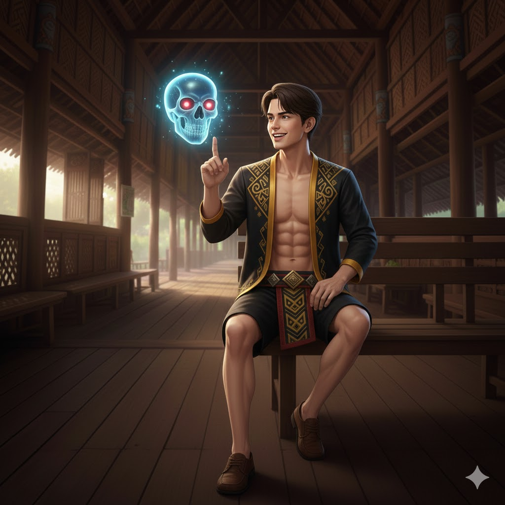
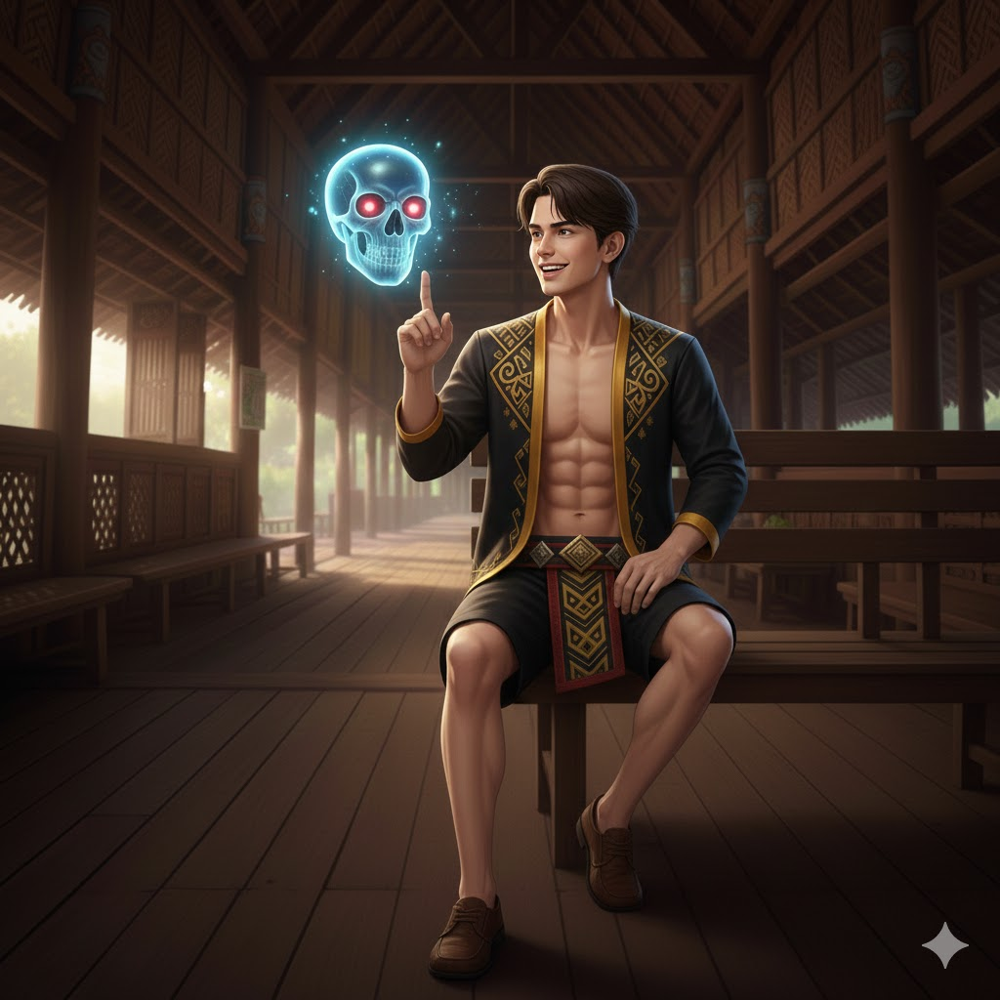
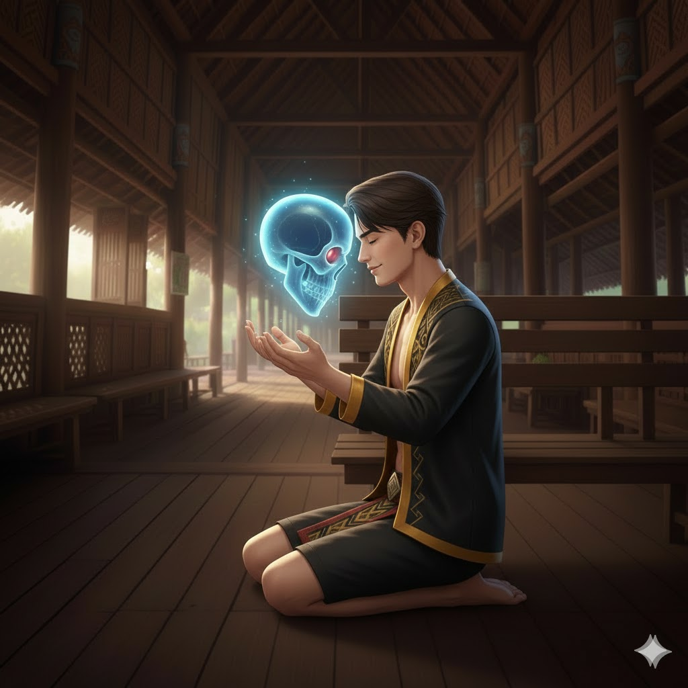
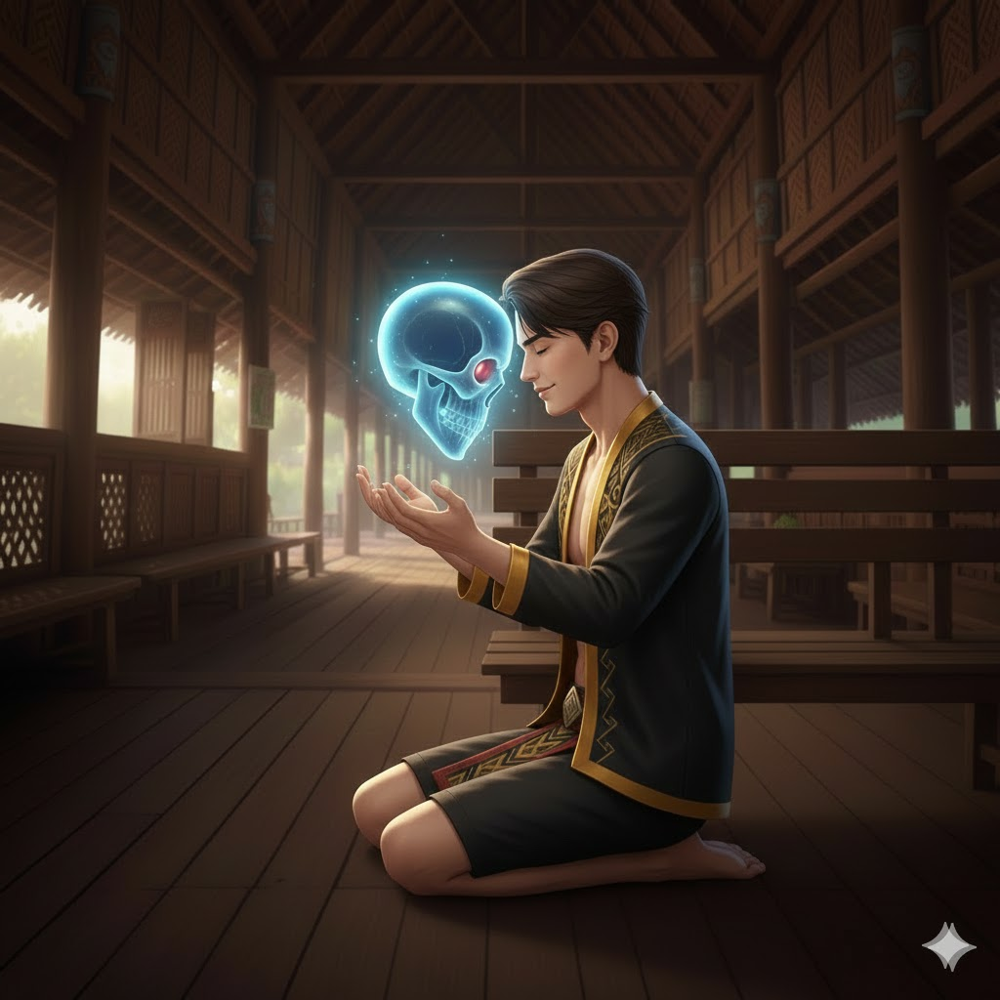

SKIN
MONSOPIAD
 

 

STATISTIK & STATUS NYAWA DAN TENAGA
- Serangan 8
- Penguasaan 7
- Kesukaran 6
- Kekebalan 5
- HP = 2500 +160
- Mana = 450 +50
BIODATA
- Nama Pahlawan : MONSOPIAD
- Nama Sebenar : Malin Dewa
- Gelaran : THE HEAD HUNTER
- Umur : 17 Tahun
- Number Pahlawan : 013
- Jenis Pahlawan : PEMBIDAK
- Makhluk : Manusia
- Bangsa : Kadazan-Dusun
- Negeri Asal : Keningau, Sabah
- Pekerjaan : Pelajar Sekolah Menengah
- Tinggi : 170 cm
- Berat : 56 Kg
SKILL
-
PASIF: ROH TENGKORAK
- Unk
- Apabila Monsopiad mati, dia akan terus mengawal tengkoraknya selama 5 saat.
- Boleh bergerak dan menggunakan Skill 1 serta Skill 2, tetapi serangannya tidak memberikan damage atau efek.
- Tengkorak akan kekal terapung di sisi Monsopiad sepanjang permainan, menandakan kewujudan kuasanya.
-
SKILL 1: TENGKORAK LASER
- (Fizikal, AOE, Burst Damage)
- Level: 1-4
- Tengkorak Monsopiad menembakkan sinar laser dalam garisan lurus sejauh 8 unit ke hadapan.
- Musuh dalam laluan laser menerima damage
- Level 1: 250 (+80% Total Physical Attack) damage
- Level 2: 300 (+85% Total Physical Attack) damage
- Level 3: 350 (+90% Total Physical Attack) damage
- Level 4: 400 (+100% Total Physical Attack) damage
- Cooldown: 6 saat
- Mana: 50/60/70/80
-
SKILL 2: PERANGKAP TENGKORAK
- (Fizikal, CC, Burst Damage)
- Level: 1-4
- Monsopiad boleh menanam hingga 5 tengkorak di medan perang.
- Tengkorak akan aktif jika musuh masuk ke dalam radius 3 unit, lalu mengejar mereka dan meletup.
- Efek:Letupan menyebabkan 200/250/300/350 Physical Damage serta slow 40% selama 1.5 saat.
- Cooldown: 8 saat
- Mana: 80/90/100/110
-
SKILL 3: BOOSTER TENGKORAK
- (Buff, DPS)
- Level: 1-4
- Monsopiad meningkatkan kuasa tengkoraknya selama 6 saat, menyebabkan Skill 1 dan Skill 2 memberi tambahan damage.
- Efek:Skill 1 dan 2 mendapat tambahan +30% damage setiap level.
- Cooldown: 10/8/6/4 saat
- Mana: 100/95/90/85
-
 ULTI: GATHER MY VICTIMS
ULTI: GATHER MY VICTIMS- (Fizikal, AOE, Burst Damage)
- Level: 1-3
- Monsopiad menggandakan tengkorak di sekelilingnya, mencipta 5 tengkorak yang menyerang mengikut mana2 skill.
- Masa: 2/4/6 saat
- Cooldown: 30 saat
- Mana: 150/170/190
PERSONALITI
- Berani dan tegas dalam menghadapi bahaya.
- Memegang amanah dengan penuh tanggungjawab.
- Agak sinis dan mempunyai humor gelap.
- Tidak mudah percaya pada orang lain tetapi setia pada sekutunya.
HIKAYAT
Dahulu kala, di tanah Borneo, negeri Sabah yang permai, berselang-seli suara gelombang hutan tebal dan bunyi teriakan suku-suku yang sering bersengketa. Pada masa itu, pemburuan kepala bukanlah sekadar adat, tetapi lambang keberanian dan keagungan. Setiap tengkorak yang dikumpul adalah bukti kemenangan dan kegagahan seorang pahlawan.
Di sebuah kampung bernama Kuai, di daerah Penampang, lahirlah seorang anak lelaki yang istimewa. Monsopiad namanya. Tubuh kecilnya ditandai dengan tanda aneh, yang dipercayai oleh para dukun sebagai petanda bakal lahirnya seorang pahlawan agung. Penduduk kampung merasakan bahawa Monsopiad bakal menjadi pelindung mereka, benteng yang memisahkan mereka dari ancaman musuh suku-suku lain.
Tatkala Monsopiad membesar, bakatnya semakin menyerlah. Dia bukan sahaja cekap dalam seni perang, tetapi juga seorang pemburu yang tiada tandingan. Setiap serangannya membawa pulang kemenangan. Kepala-kepala pahlawan musuh dikumpulkan dengan penuh megah dan disimpan di Rumah Tengkorak sebagai lambang keunggulan suku Kuai.
Monsopiad kemudian digelar "headhunter" oleh semua suku di Sabah. Kehebatan dan keberaniannya menjadi buah mulut yang merentasi lembah dan gunung. Namun, kejayaan ini mula meracun jiwa Monsopiad. Rasa tamak mula mencengkam, dan dia kini tidak lagi memburu musuh sahaja, bahkan manusia yang tidak bersalah turut menjadi mangsanya.
Tatkala keganasan Monsopiad semakin menggila, suku-suku lain yang pernah bermusuhan bergabung tenaga. Mereka bersatu untuk menjatuhkan sang pahlawan yang kini berubah menjadi ancaman. Pertempuran terakhir menyaksikan Monsopiad akhirnya tumbang di tangan musuh-musuhnya. Dengan kematiannya, tradisi pemburuan kepala mula perlahan-lahan ditinggalkan. Orang ramai takut untuk menghidupkan kembali semangat yang tamak seperti Monsopiad.
Hingga ke hari ini, di Penampang, berdiri teguh sebuah tempat dikenali sebagai "House of Skulls". Di sana tersimpan ratusan tengkorak hasil buruan Monsopiad, menjadi peringatan kepada sejarah yang penuh pengajaran.
Pada zaman moden, seorang remaja lelaki bernama Vic, anak jati Sabah, datang melawat Rumah Tengkorak. Tangannya terhenti pada sebuah tengkorak yang terasa lain dari yang lain. Tanpa sengaja, dia membawa pulang tengkorak itu, meskipun dia tidak ingat pernah menyimpannya.
Malam-malamnya diganggu mimpi aneh. Dia bermimpi seorang lelaki bertubuh gagah dan bermata tajam menyapa. Hari demi hari, mimpi itu berulang, sehingga akhirnya Vic tidak tahan. Dalam mimpinya yang terakhir, lelaki itu memperkenalkan dirinya.
"Aku Monsopiad," katanya dengan suara berwibawa. "Tengkorak yang kau bawa itu adalah milikku. Kau orang pertama yang menyentuhnya selepas sekian lama. Kini, aku serahkan kuasaku padamu. Jadilah pahlawan hebat seperti aku dahulu. Namun, ingatlah, jangan sekali-kali kau terjerumus ke dalam ketamakan, seperti mana aku telah tersesat dahulu. Tengkorak itu ada kuasa, gunakanlah ia untuk kebaikan."
Vic terbangun dengan peluh membasahi tubuhnya. Dia tahu hidupnya kini telah berubah. Tengkorak Monsopiad yang penuh kuasa itu kini menjadi amanahnya, dan dia berikrar untuk menggunakan kuasa itu dengan bijak, demi kebaikan semua.
Malam itu, bulan mengambang penuh, memercikkan sinarnya ke kamar Vic yang sunyi. Tidurnya resah, seperti ada sesuatu yang menanti di seberang alam. Sekali lagi, dia terbawa ke dalam mimpi yang terasa lebih nyata dari sebelumnya.
Di hadapannya, muncul seorang pemuda dengan rambut panjang berombak, tidak terurus tetapi kelihatan gagah dan penuh karisma. Pakaiannya ringkas, namun di lehernya tergantung loket yang berkilauan dalam cahaya bulan. Pemuda itu menguntum senyuman nakal, tetapi matanya menyimpan kesungguhan yang mendalam.
“Hei, Vic!” serunya dengan suara santai tetapi penuh keyakinan. “Akhirnya kita bertemu. Aku Cek Kebayan, pengembara dari alam lain. Jangan tertipu dengan gaya aku yang kacau ni. Aku mungkin nampak macam tak ada haluan, tapi aku tahu lebih banyak daripada apa yang kau bayangkan.”
Vic memandangnya dengan penuh kehairanan. “Cek Kebayan? Bukankah sepatutnya kau... err, seorang tua bijaksana atau semacam itu?”
Cek Kebayan tergelak kecil, rambutnya yang panjang terbuai angin. “Ah, stereotaip! Hidup ni tak semestinya ikut aturan, Vic. Aku memang lain daripada yang lain, tapi aku tahu apa yang aku buat. Dan sekarang, aku perlukan kau.”
Cek Kebayan melangkah menghampiri Vic, tangannya menyeluk poket seluar lusuhnya. “Dengar sini, kau pegang tengkorak Monsopiad, kan? Itu bukan kebetulan. Kau adalah orang yang terpilih untuk menyambung legasi dia. Tapi kuasa tu... kau tak boleh kendalikan sendiri. Kau perlukan bantuan aku.”
Vic mengerutkan dahi. “Kenapa saya? Dan apa yang kau mahukan daripada saya?”
Cek Kebayan tersenyum lebar, menunjukkan giginya yang putih berkilau. “Sebab kau ada hati. Kau tahu apa maksud tanggungjawab. Tengkorak tu tak akan pilih sembarangan orang. Tapi sekarang aku nak kau bergabung dengan aku, jadi sebahagian daripada pasukan aku. Dunia ni ada banyak ancaman, dan kita perlukan semua tenaga yang ada untuk hadapinya.”
Vic keliru. “Pasukan? Siapa lagi?”
Cek Kebayan mengangkat bahu, wajahnya penuh teka-teki. “Kau akan tahu nanti. Semua yang aku pilih ada sebabnya. Tapi satu perkara pasti: aku nak kau guna gelaran Monsopiad. Kau bukan sekadar Vic lagi. Nama tu ada sejarah, dan sekarang sejarah tu ada dalam tangan kau.”
Vic menarik nafas panjang, masih cuba memahami apa yang berlaku. “Tapi aku tak pasti aku boleh lakukannya. Aku takut kuasa ni akan buat aku jadi macam Monsopiad dulu—tamak dan hilang kawalan.”
Cek Kebayan mengangguk perlahan, senyumannya bertukar serius. “Bagus kau takut. Itu tanda kau ada kesedaran. Tapi dengar sini, aku ada untuk bimbing kau. Kau tak akan bersendirian dalam perjalanan ni. Kau akan belajar, satu langkah demi satu langkah. Sekarang, teruskan hidup kau macam biasa, tapi bersedia. Bila waktunya tiba, kita akan bertemu lagi.”
Pemuda itu mula melangkah pergi, tetapi sempat berpaling dengan senyuman penuh keyakinan. “Oh, dan Vic, jangan lupa. Kau adalah Monsopiad yang baru. Nama tu bukan beban, tapi kebanggaan. Gunakanlah kuasa tu dengan bijak.”
Dengan itu, Cek Kebayan lenyap seperti bayang-bayang yang ditiup angin malam. Vic terbangun dengan rasa bersemangat yang tidak pernah dirasainya sebelum ini. Dia tahu hidupnya kini sudah berubah sepenuhnya, dan dia bersedia menghadapi apa sahaja yang akan datang. Nama Monsopiad kini menjadi tanggungjawabnya, dan dia berikrar untuk memegangnya dengan kehormatan.